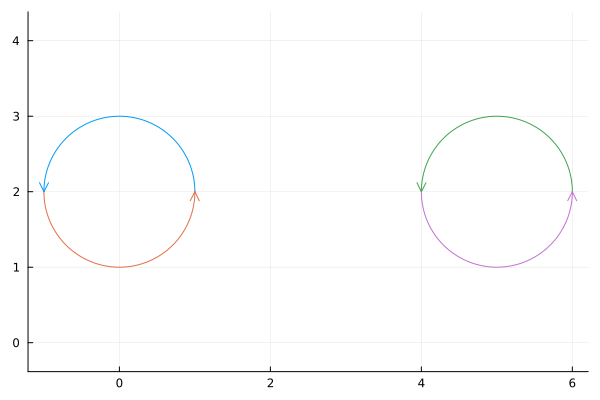
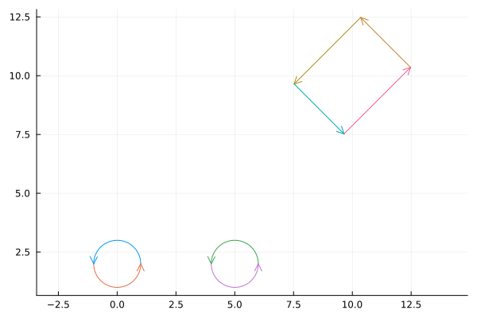
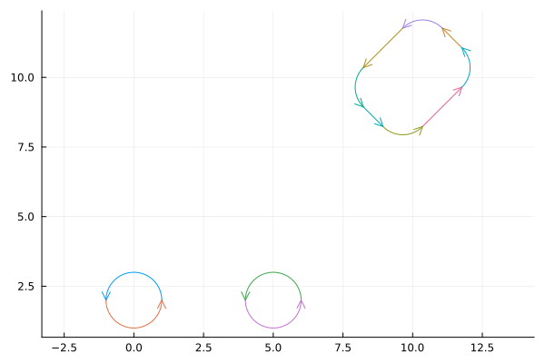
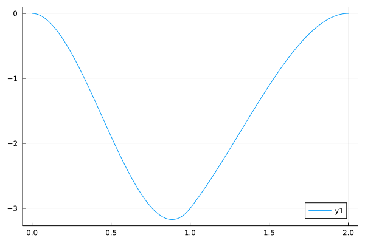
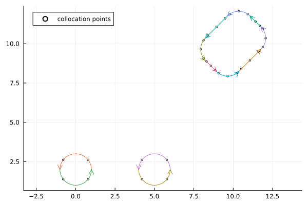

Building a mesh
using ElectrostaticOptics
using StaticArrays
using Plotstwo circles
circle_mesh_A = circle(SVector(0.0, 2.0), 1.0)
circle_mesh_B = circle(SVector(5.0, 2.0), 1.0)
combined_mesh = concat_meshes(circle_mesh_A, circle_mesh_B)
plot(combined_mesh)
Rectangles
rect = rectangle(
SVector(10.0, 10.0),
3.0, 4.0, π / 4.0
)
circles_and_rect = concat_meshes(combined_mesh, rect)
plot(circles_and_rect)
Graph stuff
Graphs.jl gives us some nice ways to ask questions about the mesh. How many connected components are there? (There are two circles + 1 rectangle, so there should be 3).
using Graphs
count_connected_components(circles_and_rect.topology)3Cycles
How many cycles does the full graph have? (Should have 3 again, circles and rectangle) The two two-element cycles are the circles, the rectangle is a four-element cycle.
simplecycles(circles_and_rect.topology)3-element Vector{Vector{Int64}}:
[1, 2]
[3, 4]
[5, 6, 7, 8]Degree of each vertex
for vert in vertices(circles_and_rect.topology)
@assert ((indegree(circles_and_rect.topology, vert) == 1) && (outdegree(circles_and_rect.topology, vert) == 1))
endDOF assignment
Fillet the rectangles to bump up the smoothnesses
smooth_mesh = fillet_corners(circles_and_rect, 1.0)
plot(smooth_mesh)
BEM function space
Let's manually program in the constraints for the function space The first four panels belong to the circles, we can give them C1 continuity The rest of the panels deserve C0 (filleted rectangel)
circle_panels = 1:length(combined_mesh.panels)
constraints_map = Dict(
(src(e), dst(e)) => (src(e) in circle_panels ? C1 : C0)
for e in edges(smooth_mesh.topology)
)Dict{Tuple{Int64, Int64}, BasisConstraint} with 12 entries:
(10, 7) => C0
(5, 9) => C0
(8, 12) => C0
(7, 11) => C0
(4, 3) => C1
(12, 5) => C0
(1, 2) => C1
(2, 1) => C1
(11, 8) => C0
(9, 6) => C0
(3, 4) => C1
(6, 10) => C0A cubic polynomial is four coefficients, the minimum to satisfy C1 on both sides.
basis = LagrangeBasis(Float64, 3)
space = build_function_space(smooth_mesh, basis, constraints_map)
space.n_dofs32We have 4 DOFs per circle (4xpanels - 4xC1), and 24 (4xpanels - 8xC0) for the rectangle, so 32 total
Plot the actual global DOFs
function panel_density(boundary_panel, coefficients, ξ)
@assert length(coefficients) == length(boundary_panel.basis.mappings)
value = sum(c * b(ξ) for (c, b) in zip(coefficients, boundary_panel.basis.mappings))
return value
endpanel_density (generic function with 1 method)Let's check if the circle is C1. We need to generate the Lagrange basis coefficients corresponding to the global DOFs.
circle_panels = space.bem_panels[1:2]
u = zeros(space.n_dofs)32-element Vector{Float64}:
0.0
0.0
0.0
0.0
0.0
0.0
0.0
0.0
0.0
0.0
⋮
0.0
0.0
0.0
0.0
0.0
0.0
0.0
0.0
0.0DoFs are: 1: value at displayed ξ = 1 2: slope at displayed ξ = 1 3: value at displayed ξ = 0, 2 (periodic boundary conditions!) 4: slope at displayed ξ = 0, 2 (periodic boundary conditions!)
u[1:4] .= [-3.0, 1.0, 0.0, 0.0]
coefficients = [
local_coefficients(space.maps[i], u)
for i in 1:2
]
ξ_01 = collect(LinRange(0.0, 1.0, 128))
ξ_vals = [ξ_01; 1.0 .+ ξ_01]
density_vals = [
[panel_density(circle_panels[1], coefficients[1], ξ) for ξ in ξ_01];
[panel_density(circle_panels[2], coefficients[2], ξ) for ξ in ξ_01];
]
plot(ξ_vals, density_vals)
Set up a collocation problem (look at the collocation points)
collocation_problem = CollocationProblem(
smooth_mesh,
space,
:GaussLegendre,
)
colloc_pt_coords = zeros(Float64, space.n_dofs, 2)
for (idx, row) in enumerate(collocation_problem.row_defs)
colloc_pt_coords[idx, :] = row.pt
end
plot(
colloc_pt_coords[:, 1],
colloc_pt_coords[:, 2],
seriestype = :scatter,
markercolor = :white,
markersize = 2,
label = "collocation points",
)
plot!(smooth_mesh)
This page was generated using Literate.jl.